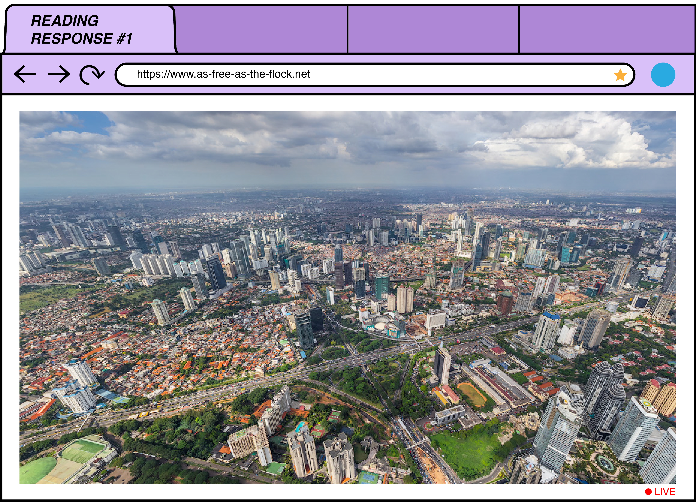
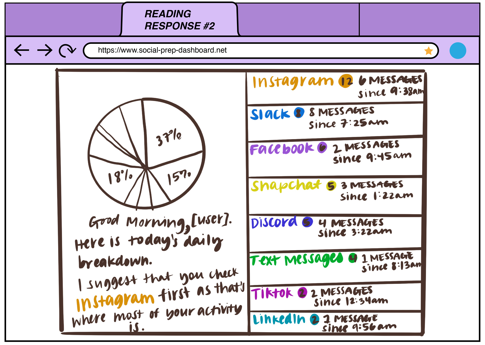
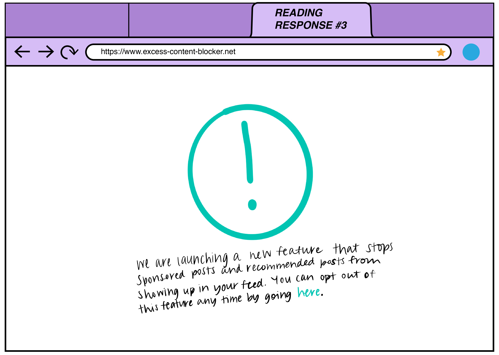

The idea that a website could be a place for your mind to rest, where you watch one of those birds with camera trackers on them fly through sky and let your mind relax.
This website was developed to be a dashboard for all social media interactions and notifications to accumulate. During the pandemic I have found social media to be very exhausting, as well as responding to friends and school admin to be very exhausting, and the webiste itself for New Document 1 also fatigued me in the same way, which prompted this website response.
 img{ width: 70%; height: auto; margin-top: 40px; margin-bottom: 0px; display: block; margin-left: auto; margin-right: auto; }When Frank talks about websites turning us into a product and a commodity, as well as promoting extremism from the promoted posts, I had the idea to create this post blocker.
 img{ width: 70%; height: auto; margin-top: 40px; margin-bottom: 0px; display: block; margin-left: auto; margin-right: auto; }